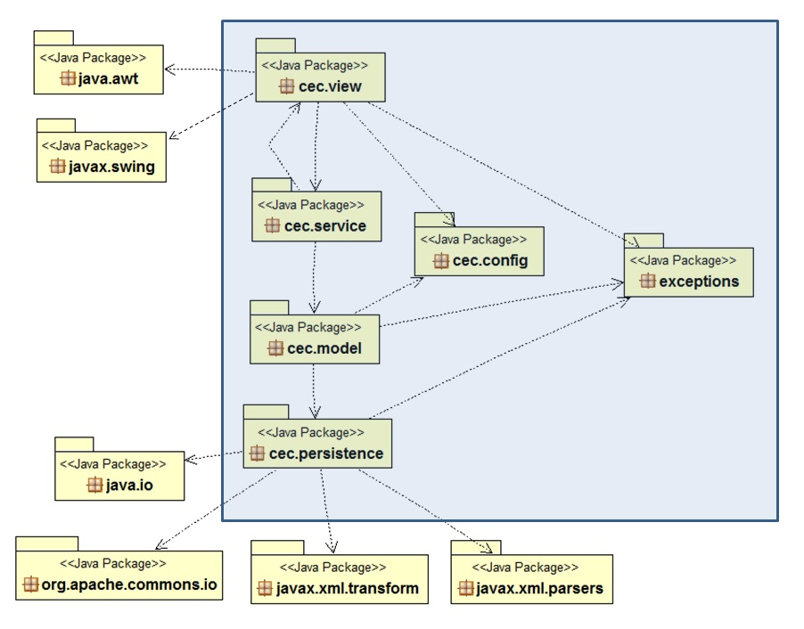

CECProject Design Phase 1
Wednesday, May 22, 2013
Group 5: Amish Gala, Deyvid William, Pankaj Kapania, and Romeo Honvo
Design
Use Object Aid to visualize our classes/packages
- N-Tiers and Package Structure
Highlighted in blue are the major CEC packages. As depicted, we deployed an 4-tier architecture
which includes: View, Service, Model, and Persistence. We minimized coupling between layers by having
dependencies flow from top to bottom. The exception to this was that the service layer needed to communicate
with the view layer in order to ensure a consistent user experience. However, this coupling was restricted
to a specific mechanism which was well encapsulated. More on this appear below.
Certain cross-cutting concerns span multiple tiers and they were organized into separate packages:
Configuration, and Exceptions.

- Major classes
Architecture
- Maintainability, testability
- Usability (swing popups, error handling, logging.. )
Important Decisions
- Data format at each layer (+formatting XML)
- Creating and deleting folders
- Using the DateFormat parse method, and dealing with checked exceptions
- Default sort for all folders
- User is able to create an email, save as draft, and continue working on this
email
Reused Libraries
- Apache commons IO: for File Utils and File Delete
- W3C DOM: comes with JDK - to interact and interrogate DOM objects
Design Patterns
- Builder: cec.model.EmailBuilder
- Factory: cec.model.FolderFactory, cec.persistence.EmailDaoFactory,
cec.persistence.FolderDaoFactory
- Adapter/Wrapper: cec.view.Email, cec.view.EmailClient
- Observer: cec.view.EmailClient (TreeSelectionListener), JTable for emails listens to
model changes when an email is send, saved, or deleted.
- Singleton: cec.view.EmailClient: explanation?
- Value object: cec.view.EmailViewEntity
- Data Access Object (DAO) interfaces: cec.persistence.EmailDao, cec.persistence.FolderDao
- Test Patterns:
- Stub objects: isolated model tests by injecting/stubbing dependencies to persistence
- Integration: a few more-involved integration tests were written, on the back
bone one solid unit tests
Code snippet
TableCell tc = new TableCell();
tc.getNext();